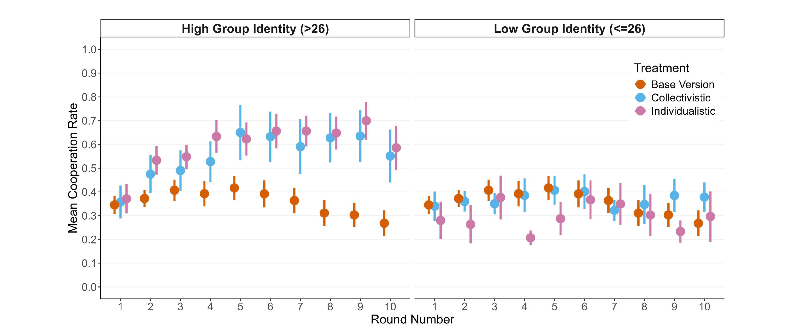

Individualism: The end of social cohesion? The effects of inequality and group identity on cooperation
Senn, S., Mutzner, N., Oberhauser, V., & Rauhut, H. (2025). Frontiers in Behavioral Economics, 4.

PhD Researcher · Sociology
I study Human–AI interaction and cooperation through experimental methods. Below is a curated snapshot of my peer‑reviewed work, working papers, teaching, and selected projects.
Short academic bio
I am a PhD researcher in Sociology at the University of Zurich studying human–AI cooperation in social dilemmas and group decision‑making. My work combines behavioral experiments with sociological concepts. I teach experimental design in the age of AI and develop classroom replications using synthetic participants.
Peer‑reviewed & preprints
Senn, S., Mutzner, N., Oberhauser, V., & Rauhut, H. (2025). Frontiers in Behavioral Economics, 4.
Wang, N., Mutzner, N., & Blanchet, K. (2025). Science and Public Policy, 52(3), 356–374.


Wang, N., Mutzner, N., & Blanchet, K. (2023). Technology in Society, 75, 102377.
Mlynar, J., Bahrami, F., Ourednik, A., Mutzner, N., Verma, H., & Alavi, H. (2022). Proceedings of CHI 2022, 1–13.

Ourednik, A., Mlynář, J., Bahrami, F., Mutzner, N., & Alavi, H. (2021, March). Conference contribution.

Ourednik, A., Mlynář, J., Mutzner, N., & Alavi, H. (2021). Interactions, 28(6), 62–66.
Manuscripts under review & in preparation
Godazgar, T., Mutzner, N., Yasseri, T. (2025).

Mutzner, N., Yasseri, T. (2025).

Mutzner, N., Velicu, A., Rauhut, H. (2025).
Joint research centre dedicated to understanding how AI and automation are reshaping society.
Bridging the «Wisdom Gap» through research and innovation across sectors and cultures.

SNSF Spark Grant 2019 towards establishing a sociological conception of AI.
Complete replication study workflow with synthetic participants.
Core topics: social norms, cooperation dynamics, experimental methods, behavioral experiments.
Human–AI Cooperation: Leveraging AI Norm Reinforcement in a Public Goods Game.
Synthetic Replication Games Workshop.